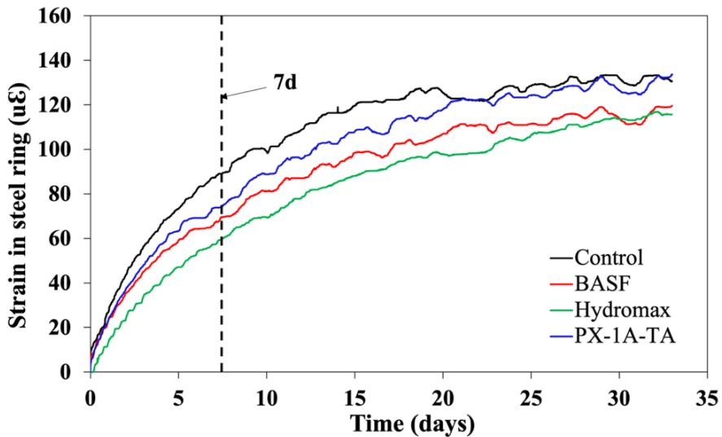
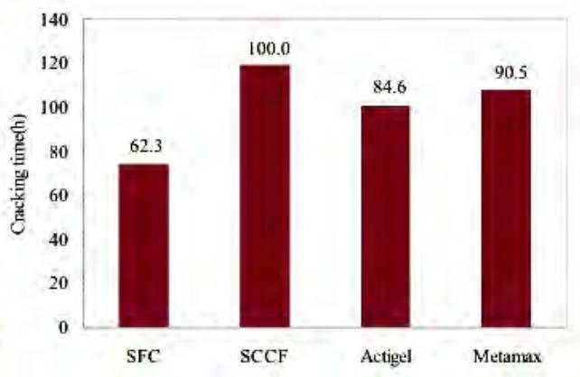
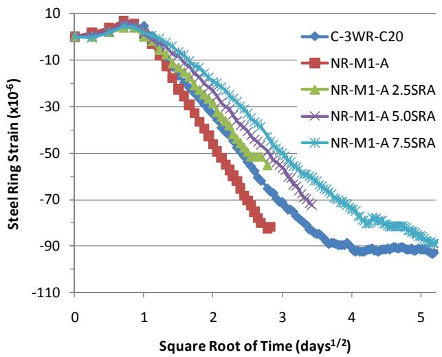
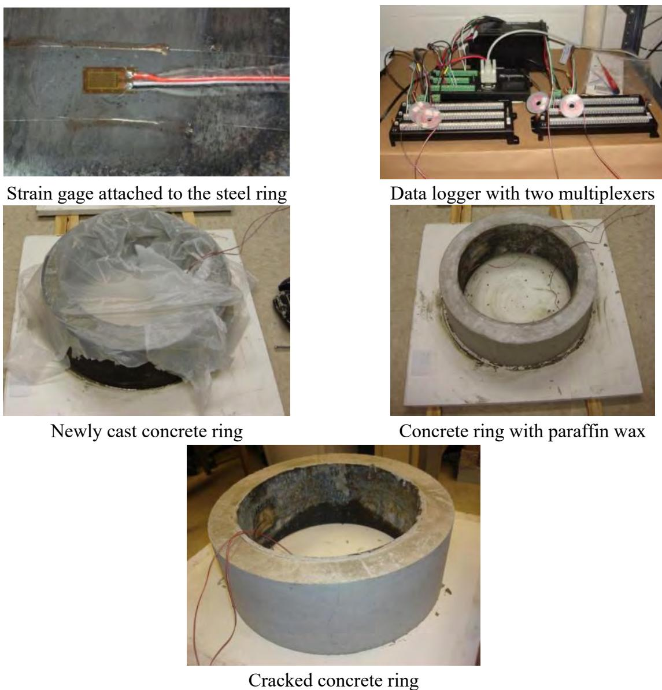

Restrained Shrinkage Ring Test
The restrained shrinkage ring test is a standardized experimental method used to evaluate the cracking potential of concrete by casting it within a rigid steel enclosure that prevents free contraction. As the concrete cures and dries, its natural tendency to shrink generates internal tensile stresses because the surrounding ring restricts deformation [1] [2] [4]. Strain gauges attached to the steel ring monitor the resulting compressive forces exerted by the concrete over time, providing a quantitative measure of the induced strain [2] [3] [5]. The test data is typically analyzed using mathematical models that relate shrinkage strain to the square root of elapsed time to derive a strain-rate factor for comparing mix designs [2] [4]. Cracking events are identified by sudden drops in the measured compressive strain as the concrete loses its tensile capacity, and the overall cracking potential is often expressed as the ratio of induced stress to material tensile strength [1] [3].
Sources (5)
Key findings
- The restrained ring test revealed that self-consolidating concrete mixes developed tensile stresses leading to cracking between 8 and 13 days, whereas conventional mixes did not crack [2].
- Adding a shrinkage-reducing admixture lowered ring strains, with higher doses eliminating cracking while lower doses reduced shrinkage but still allowed cracks to form [2].
- Only the Michigan mix cracked at approximately seven days in restrained-shrinkage ring tests, while other regional mixes remained intact due to varying cracking potentials and fiber reinforcement effects [1].
- Replacing fine aggregate with lightweight fine aggregate for internal curing produced low average stress rates, classifying all mixes as having low cracking potential in restrained-shrinkage ring tests [4].
- Fiber-reinforced concrete mixes followed similar exponential compressive-strain development without exhibiting sudden strain drops that signal cracking during the 28-day test period [3].
- Higher percentages of PP microfibers consistently lowered the calculated cracking potential ratio, indicating improved resistance to drying-shrinkage cracking in restrained ring specimens [3].
- Mixes containing superabsorbent polymers recorded lower average strains than plain control mixes, with specific polymer types delivering varying degrees of shrinkage reduction [5].
Restrained Shrinkage Cracking Potential
The restrained shrinkage ring test assesses a concrete mixture’s propensity to crack by encasing the material in a rigid steel ring that inhibits free contraction during drying [1] [2] [3] [4] [5]. As the concrete attempts to shrink, tensile stresses develop within the matrix and induce measurable compressive strain in the surrounding restraint ring [2] [3] [4] [5]. Engineers quantify this cracking potential by comparing the calculated maximum shrinkage-induced stress against the concrete’s measured splitting tensile strength [1] [3] [4].
The figure below illustrates how this cracking potential evolves over time.
 Shrinkage stress-to-tensile strength ratio (cracking potential_C R ) of restrained concrete rings with time [1]
Shrinkage stress-to-tensile strength ratio (cracking potential_C R ) of restrained concrete rings with time [1]
The figure plots the cracking potential, defined as the shrinkage stress-to-tensile strength ratio, against concrete age in days for five different mixtures.
Research problem — There is a need to accurately assess which concrete mixes are prone to early-age cracking under restrained conditions, as elevated shrinkage stresses compromise the structural integrity and durability of pavement and bridge deck applications [2]. Research must determine how specific material modifications influence the development of tensile stress and strain in confined concrete to identify mix designs that mitigate cracking potential without relying solely on direct crack observation [1] [3] [4]. It is critical to evaluate whether additives can effectively reduce shrinkage strains and prevent the sudden stress releases associated with crack formation, thereby protecting long-term service life against aggressive environmental agents [5].
The figure below illustrates the restrained shrinkage behavior of various concrete mixtures.

Restrained shrinkage of concrete mixtures [5]The figure displays the strain in a steel ring over time for four different concrete mixtures, including a control and three additives. Restrained ring shrinkage was monitored for 33 days, showing a gradual increase in strain without any sudden drops that would indicate cracking. Concrete specimens containing SAP demonstrated lower strain levels than the control specimens.
State of the art — The restrained shrinkage ring test is now a standardized laboratory method, most commonly performed according to ASTM C1581, for assessing drying-shrinkage cracking risk in concrete [3]. Current practice relies on monitoring strain development over time to calculate an average strain-rate factor or a cracking potential ratio derived from shrinkage stress and tensile strength, enabling direct comparison of different mix designs [1] [2]. Recent research has extended the classic test matrix to include varying polypropylene microfiber contents and integrates high-resolution digital image correlation for detailed surface strain mapping while retaining core interpretation criteria [3].
The figure below illustrates the strains developed in steel rings as a result of concrete shrinkage.
 Strains of steel rings resulting from concrete shrinkage [1]
Strains of steel rings resulting from concrete shrinkage [1]
The figure displays the development of compressive strain in steel rings over time for five different field mixtures (IA, KS, NH, PA, and MI) as they undergo restrained shrinkage. The Michigan mixture cracked around 7 days, which is indicated by a sudden drop in the measured strain values on its curve. The trends shown in the restrained shrinkage test results are in agreement with the free shrinkage results.
Findings from the reports
- Adding a shrinkage-reducing admixture lowered ring strains; a higher dose eliminated cracking, while a lower dose reduced shrinkage but still allowed cracking to occur [2].
- The order of shrinkage severity measured by average strain-rate factors in the restrained rings matched the trends observed in unrestrained prisms for the evaluated mixtures [1].
- Lightweight fine aggregate mixes produced low average stress rates, leading to a classification of low potential for cracking compared with the control mixture [4].
- None of the fiber-reinforced concrete specimens cracked during testing, and the calculated cracking potential remained below the critical value of 1.0 for all mixes [3].
- The calculated cracking potential decreased progressively with higher polypropylene microfiber dosages, indicating improved resistance to drying-shrinkage cracking [3].
- All mixes containing superabsorbent polymers showed lower average tensile strain than the plain control, with no specimens exhibiting crack-induced strain releases during the test period [5].
Novelty & rigor — The research introduces a quantitative cracking-potential metric derived from the strain-rate factor obtained via square-root-time regression of restrained shrinkage data, linking early-age behavior directly to cracking risk [1] [2] [4]. Methodological innovations include adapting standard protocols through modified specimen counts, scaled admixture dosages for variable isolation, and high-frequency strain acquisition to precisely detect cracking onset [3]. The approach is reproducible by following specific casting geometries, environmental conditioning parameters, and analytical procedures that compute stress ratios from recorded strain histories [1] [2] [3] [4] [5].
The figure below illustrates the restrained ring shrinkage strain and cracking times for SFC and SCCF with nano-clay.

Restrained ring shrinkage strain and cracking times of SFC and SCCF with nano-clay [2]The figure displays a bar chart comparing the time to cracking for four different concrete mixtures: SFC, SCCF, Actigel, and Metamax.
Reported values
| Parameter | Value | Context | Source |
|---|---|---|---|
| cracking time | 7 days | Michigan mixture | [1] |
| cracking time | 8 to 13 days | SFSCC samples | [2] |
| SRA dosage | 2.5 l/m3 | low dosage of SRA | [2] |
| SRA dosage | 7.5 l/m3 | Increasing the SRA | [2] |
| cracking potential threshold | 1.0 | trendlines in Figure 28 | [3] |
| PP microfiber content | 0.25% | FRC mix compared to control | [3] |
| PP microfiber content | 0.50% | mixes with decreased average rate of strain development | [3] |
| PP microfiber content | 1.0% | mixes with decreased average rate of strain development | [3] |
| monitoring duration | 33 days | restrained ring shrinkage test | [5] |
The figure below illustrates how steel strains evolve in response to concrete ring shrinkage as the SRA dosage increases.

Steel strains due to concrete ring shrinkage with increasing SRA dosage [2]The figure displays a plot of Steel Ring Strain versus the Square Root of Time, illustrating data from restrained shrinkage ring tests. The graph demonstrates how the addition of shrinkage-reducing admixtures affects the rate and magnitude of strain development in the steel ring over time.
Across the reviewed reports, restrained shrinkage cracking potential is fundamentally governed by mix composition and admixture dosage, with high-cement self-consolidating mixes exhibiting significant cracking risks while fiber reinforcement and superabsorbent polymers effectively suppress tensile stresses to prevent failure. Quantitative strain-rate factors serve as reliable predictors of cracking severity, establishing a clear hierarchy where mixes with higher rates, such as those containing specific chemical admixtures or lacking internal curing agents, correlate directly with earlier crack initiation and higher calculated potential ratios. While conventional high-shrinkage mixes fail under restraint within the first two weeks, modifications such as lightweight fine aggregate replacement or optimized fiber dosages reduce average stress rates and keep cracking potential ratios below critical thresholds, thereby ensuring long-term integrity. [1] [2] [3] [4] [5]
The figure below illustrates the cracking potential over time for all fiber-reinforced concrete mixes.
 Cracking potential over time for all FRC mixes [3]
Cracking potential over time for all FRC mixes [3]
The figure plots the cracking potential of concrete specimens containing varying percentages of polypropylene microfibers against sample age in days. Cracking potential remains consistently lower in mixes with higher proportions of PP microfibers throughout the entire test period, indicating improved resistance to drying shrinkage cracking for FRC mixes with higher fiber doses.
Implications — Designers should utilize the restrained ring test and cracking-potential ratio to screen mixtures, limiting high-shrinkage formulations and considering fiber reinforcement to mitigate early-age cracking risks [1]. Mix designs for self-consolidating concrete must prioritize lowering the strain-rate factor through specific admixture selections and careful control of additives like nano-clay to suppress drying shrinkage [2]. Incorporating superabsorbent polymers offers a practical strategy for mitigating early shrinkage cracking by maintaining internal moisture, potentially allowing for reduced reinforcement in structural elements [5]. The use of lightweight fine aggregate for internal curing significantly reduces stress rates and cracking potential, supporting lower cement content while extending the projected service life of concrete decks [4].
Limitations — The measurement process terminates upon cracking, preventing reliable comparison of maximum strain values across different concrete mixes [2]. When no actual cracking occurs within the test duration, conclusions regarding crack resistance must rely on indirect metrics rather than direct observation [3] [5]. The use of fewer specimens than recommended by standard protocols reduces the statistical confidence of the results [3].
The figure below illustrates the setup for restrained concrete ring testing.

Restrained concrete ring testing [2]The figure displays the experimental apparatus and stages of a restrained shrinkage test, including a strain gage attached to a steel ring and a data logger with multiplexers used for monitoring.
Evidence: 5 reports (5 primary)
Related concepts
In this hierarchy
- Parent: Shrinkage & Early-Age Cracking
- Sibling: Capillary Pressure in Concrete
- Sibling: Coefficient of Thermal Expansion (Concrete)
- Sibling: Drying Shrinkage
- Sibling: Plastic Shrinkage Cracking
Related by shared evidence
- Cement Hydration — shares 5 reports
- Concrete Curing — shares 5 reports
- Concrete Materials & Mixtures — shares 5 reports
- Drying Shrinkage — shares 5 reports
- Air Entraining Agent — shares 4 reports
- CP Tech Center Reports — shares 4 reports
- Fly Ash — shares 4 reports
- Heat of Hydration — shares 4 reports
Similar topics
- Shrinkage & Early-Age Cracking
- Drying Shrinkage
- Plastic Shrinkage Cracking
- Coefficient of Thermal Expansion (Concrete)
- One-Dimensional Freezing
- Cement Hydration
- Freeze-Thaw Durability
- Concrete Curing
References
- P. Taylor, P. Tikalsky, K. Wang, G. Fick, and X. Wang, "Development of Performance Properties of Ternary Mixtures: Field Demonstrations and Project Summary," National Concrete Pavement Technology Center, Ames, IA, Rep. TPF-5(117), 2012. [Online]. Available: https://www.intrans.iastate.edu/wp-content/uploads/2018/03/ternary_final_w_cvr.pdf
- K. Wang, S. P. Shah, J. Grove, P. Taylor, P. Wiegand, B. Steffes, G. Lomboy, Z. Quanji, L. Gang, and N. Tregger, "Self-Consolidating Concrete—Applications for Slip-Form Paving: Phase II," National Concrete Pavement Technology Center, Ames, IA, Rep. TPF-5(098), 2011. [Online]. Available: https://www.intrans.iastate.edu/wp-content/uploads/2018/03/SCC_Phase_2_final_report-edited_wcover.pdf
- B. Shafei, P. Taylor, B. Phares, and M. Kazemian, "Fiber-Reinforced Concrete for Bridge Decks," Bridge Engineering Center, Iowa State University, Ames, IA, Rep. TR-767, 2021. [Online]. Available: https://www.intrans.iastate.edu/wp-content/uploads/2021/12/fiber-reinforced_concrete_in_bridge_decks_w_cvr.pdf
- P. Taylor, T. Hosteng, X. Wang, and B. Phares, "Evaluation and Testing of a Lightweight Fine Aggregate Concrete Bridge Deck in Buchanan County, Iowa," National Concrete Pavement Technology Center and Bridge Engineering Center, Ames, IA, Rep. TR-648, 2016. [Online]. Available: https://www.intrans.iastate.edu/wp-content/uploads/2018/03/Buchanan_LWFA_bridge_deck_w_cvr.pdf
- B. Zhou, P. Taylor, and K. Wang, "Superabsorbent Polymer in Concrete to Improve Durability," National Concrete Pavement Technology Center, Iowa State University, Ames, IA, Rep. TR-793, 2025. [Online]. Available: https://www.intrans.iastate.edu/wp-content/uploads/2025/04/superabsorbent_polymer_in_concrete_w_cvr.pdf
Feedback on this page